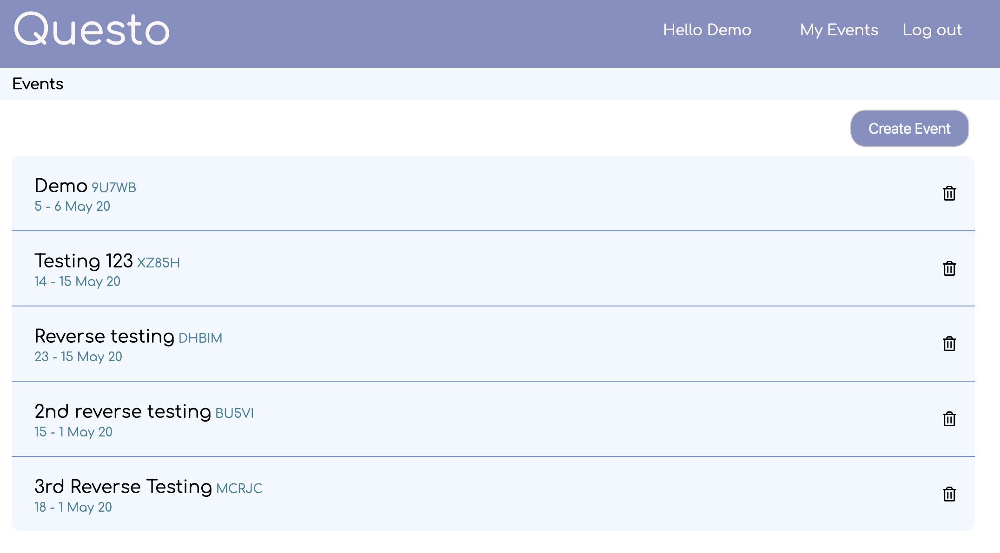
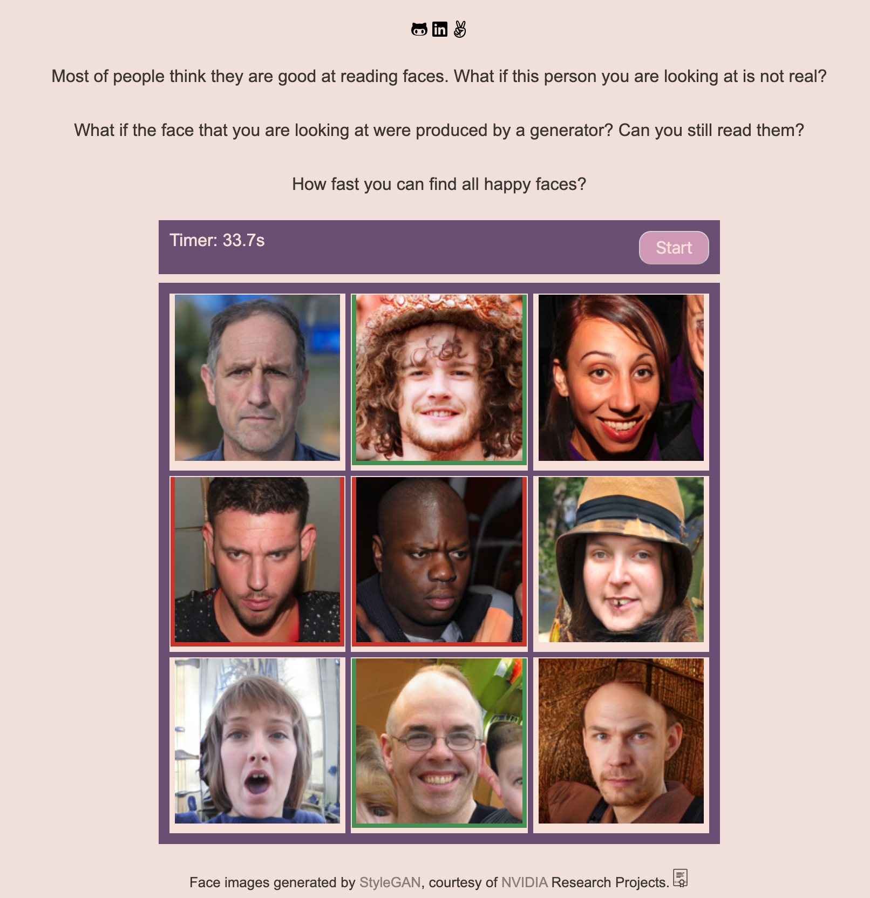

Dilan BALCI

Hi!
I’m a San Francisco based sofware developer, nuclear energy engineer and a plant lover.


Projects
Questo

- Q&A site based on sli.do
- db: PostgreSQL
- languages: JavaScripts and Ruby
- backend: Ruby on Rails
- frontend: React and Redux site link
github repo
Read My Face

- Facial expression catching game
- languages: JavaScript, HTML5, CSS site link
github repo
Airport Advisor

- Airport review site
- db: mongoDB
- languages: JavaScript
- backend: Node.js, Express.js
- frontend: React and Redux site link
github repo
Experience
Education
About me
I always had an interest in software development while I was in university. I directly interacted with programming
including my graduation project, and my interest got stronger after moving to the US because there are so many
people
who work with significant companies and it attracted me to work with software in order to help or affect others
through
applications. Given these circumstances, I decided to take part in this community by taking steps such as taking
courses
from sites as Coursera. One of the courses I was working on was Machine Learning by Andrew Ng. I had trouble
carrying
out what I learned in this course because of the lack of the education I gained from my university. Due to this
situation, I decided to add further steps to my knowledge by going to the App Academy. AA was undoubtedly an intense
and
effective bootcamp.. I studied web applications development with languages such as JavaScripts, Ruby and Python. I
have
worked with frameworks such as Ruby on Rails, React, Redux, Express.js and Node.js. and I used database systems like
PostgreSQL and MongoDB in three months. I took part in a group project named Airport Advisor by working as a backend
engineer. With this gained experience, I learned important skills such as collaborational work and also git feature
branch workflow technique of GitHub.
On the other hand I was working on a personal project which is called Questo. This project was a clone of sli.do,
Q&A
site, for storing events that assists users in searching for events. Regarding this project, I used Ruby on Rails
framework for backend and postgreSQL for database. To acknowledge new ways on Rails, I created a new rails route.
Finally I deployed Questo for public access by using Heroku.
I made myself comfortable with development methodologies and testing. I am a self motivated learner and have strong
analytical skills. I am looking for a software engineering position to broaden my knowledge and horizon and build
great
applications.